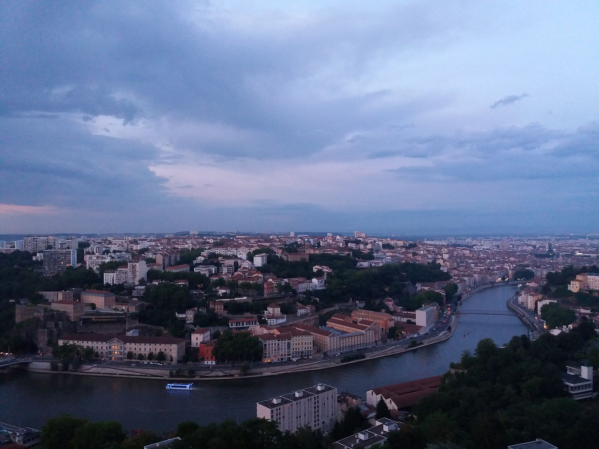
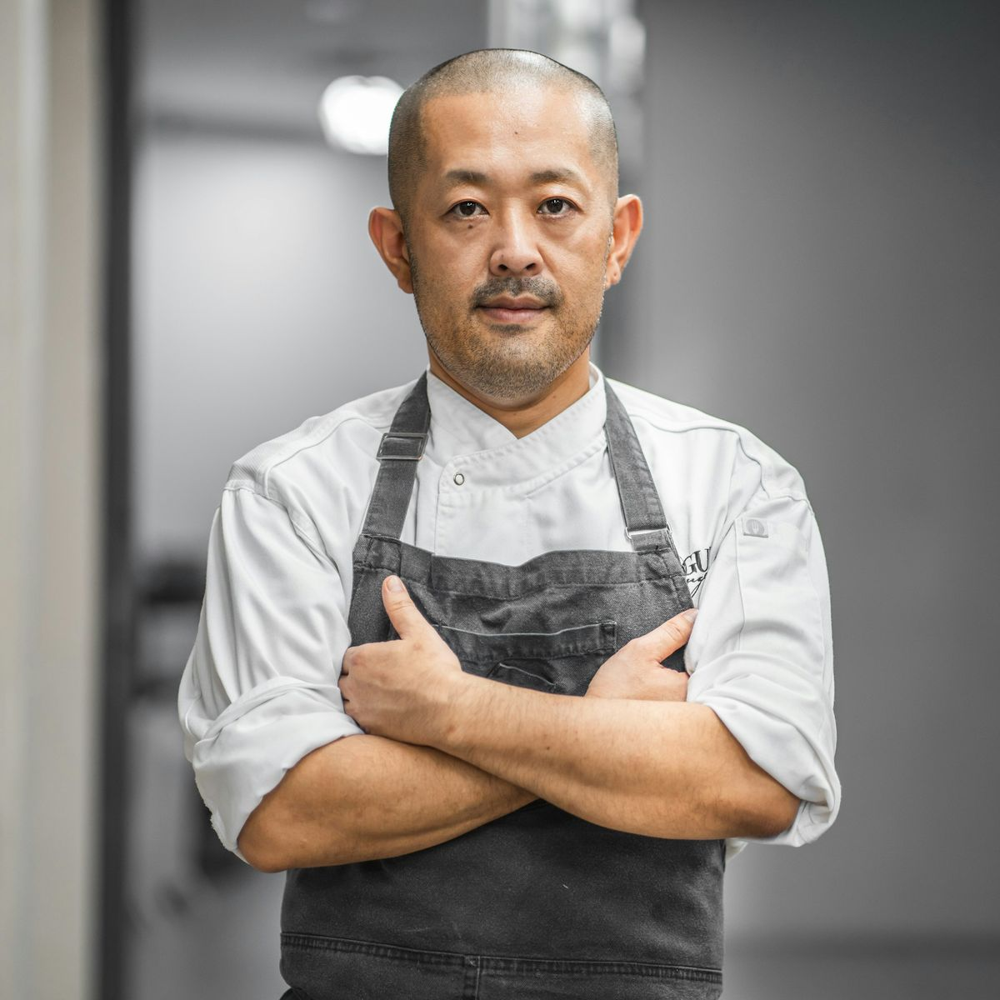

Cheffe de salle & directrice
Camille Fontaine
Vingt-deux ans de maison. Elle orchestre le service avec la rigueur d'une horloge comtoise et la mémoire de tous les goûts — et de toutes les allergies — de nos hôtes réguliers.

Depuis 1929
L'histoire d'une famille lyonnaise qui, depuis presque un siècle, n'a changé qu'une chose : la carte.
L'Histoire
En 1929, Aurèle Bérard et son épouse Madeleine ouvrent sur le quai Saint-Vincent une table d'hôtes de douze couverts, à l'étage de leur loge de passeur. On y mange ce que la Saône et le marché de la Croix-Rousse donnent : brochet, perche, poulet de Bresse, poireaux. Le vin arrive en fût, par la route de Beaujeu.
La maison survit à la guerre grâce aux mariniers, puis grandit avec la ville. En 1958, leur fille Jeanne rachète le rez-de-chaussée, ouvre la salle actuelle et grave au-dessus de la porte les mots qui n'ont jamais bougé : « Ici, l'hôte décide de l'heure. »
En 1998, la petite-fille, Sylvie Vasseur, ancienne cheffe de salle place Bellecour, prend la maison et la fait connaître des guides. La deuxième étoile du Guide Michelin arrive en 2023, sous la cuisine de Kenji Tanaka — comme une évidence, dira-t-elle, « plutôt une consécration du produit que du chef ».
Aujourd'hui, la Maison Aurèle reste une affaire de famille : trente-cinq couverts, une cave voûtée du XVIIᵉ siècle, et le même poêle en fonte qui chauffe la salle d'hiver depuis 1931.

Le Chef
Né à Kanazawa, formé à Osaka puis à la tradition lyonnaise, Kenji Tanaka dirige les cuisines de la Maison Aurèle depuis 2016.
Passé par les cuisines d'une grande maison de la presqu'île puis par une table étoilée du Jura, il a mis neuf ans à apprivoiser la maison avant de signer sa propre écriture : la précision japonaise du geste au service d'un terroir rhodanien sans détour. Sa carte ne mentionne jamais une technique : seulement la ferme, la pêche, la saison.
« Une bonne assiette est une assiette honnête : elle dit d'où elle vient. »
Découvrir sa carteL'Équipe
En salle comme en cuisine, la maison fonctionne à l'ancienneté : la moyenne d'occupation des postes dépasse dix ans.
Cheffe de salle & directrice
Vingt-deux ans de maison. Elle orchestre le service avec la rigueur d'une horloge comtoise et la mémoire de tous les goûts — et de toutes les allergies — de nos hôtes réguliers.
Sommelier
Gardien des 400 références de la cave voûtée, du Beaujolais des copains aux Meursault de garde. Il invente chaque saison de nouveaux accords mets-vins, jamais dogmatiques.
Cheffe pâtissière
Formée chez un grand chocolatier de Tain, elle signe les desserts de la maison et les mignardises du salon : sa praline rose au poivre de Timut est devenue une signature.
Nos Engagements
I
Légumes des Terres Froides, truites de la Dombes, volailles de Bresse en direct, pain au levain du boulanger de la montée Saint-Sébastien. Douze fournisseurs, tous à moins de 100 km.
II
400 références, dont un tiers de vins nature et vivants. Chaque flacon est conservé dans la cave voûtée, à 14 °C, et les grandes bouteilles circulent : une cave est faite pour être bue.
III
Pas de dress code, pas d'heure imposée : on entre comme chez des amis exigeants. Les enfants ont leur menu, les anniversaires leur gâteau cacheté.